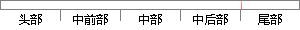

将坐标轴旋转为特征点的方向， 确保 旋转不变性， 之后 以特征点为中心取 相应 的
片段位置图

相似结果
相似片段：
方向，即利用关键点领域像素的梯度方向分布特征为每个关键点指定方向参数，使算子具备旋转不变性； (1.4)生成特征描述符，包括以下步骤： (I. 4. I)将坐标轴旋转为特征点的方向，以保证旋转不变性；(I. 4. 2)以特征点为中心取16X16像素大小的窗口，但是特征点所在的行和列不取；(I. 4. 3)在每个4X4的图像小块上计算8个方向的梯度方向直方图，绘制每个梯度方向的累加值，形成一个种子点，
| 对比库： | WriteCheck云资源库 |
| 来源： | google.com.na 查看来源 |
| 发布时间： | 2016-07-29 |
| 相似率 | 75% （轻度抄袭） |